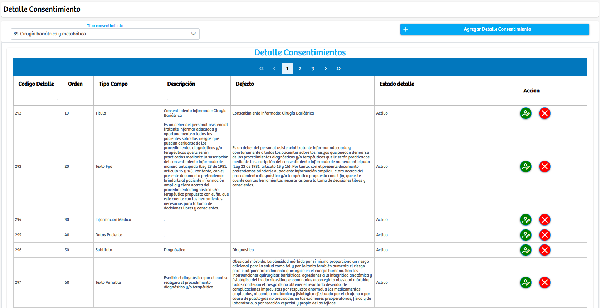

Modulos Sas-Web
Funcionalidades
Detalles Consentimientos
Este módulo corresponde a la administración detallada del contenido estructurado de los consentimientos informados que utiliza la plataforma SASWEB. Es una zona de configuración donde el personal autorizado puede crear, editar, ordenar y gestionar cada fragmento o campo que compone un consentimiento. De esta forma, cada consentimiento se construye como una plantilla dinámica, reordenable y editable, que luego será usada en procesos de salud como vacunación, procedimientos, aplicaciones terapéuticas, etc.
Si en algun caso se quiere agregar un detalle a los consentimientos informados, tenemos el boton de: "Agregar Detalle Consentimiento" que nos redirige a un formulario donde podremos crear el nuevo detalle con: Consentimiento, Tipo de campo, orden y una descripción.